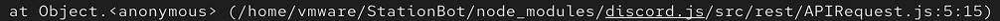

We are working on documentation. You will find issues or mispell with the documentation. Please wait until the documentation is completely ready.
Welcome to Introduction. Now you will learn how to setup the StationBot.
To start, you will need:
After installing. You will need to run following commands:
If you have checked the version what you did before. Now clone the repository
You can select the version you want to clone:
After cloning the repository. What next? Run the bot in following commands:
You will see the error message:
You see? You need to install the dependencies called Discord.js!
Installing the dependencies is just easy. Write the next commands:
Next commands:
To make the bot works. You need to make a config.json file.
Required dependencies:
In order to get the token, you need go head at discod.com/developers/application and create a new application with the name what you want to name.
After creating the new application. Select the Bot, and click the button called "Add Bot". And click the copy button (Its copy the bot tokens. Small reminder: Don't share your bot tokens with others, this will make the bot in danger).
Then save the file and run the following command:
Requirement:
To make a command at your Bot. First you need to create a file with the command name inside the command (./command/put the fiel into the category)
After creating the file write the command:
Then save the file and run the following command:
Now write the following steps:
Now your command work!
Did you read and learned the docs of StationBot? Well now you are officially a developer. Now there come the very final step. In order share your bot into repos.
Now you ahead into github or gitlab and create the repos and name your repository. Now put all the files to your repository.
Now your completed the documentation. And enjoy your development!